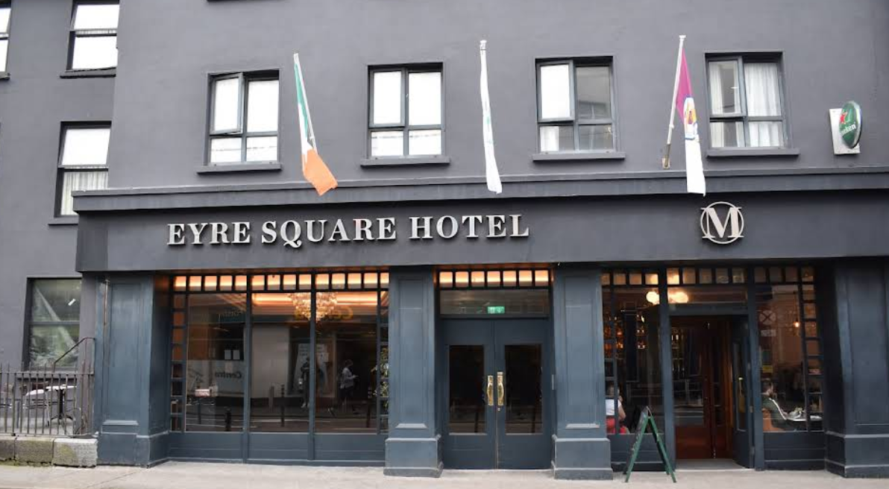

Viaje a Irlanda 2025
Día 19 (sábado)
ATHLONE
Hoy salimos en dirección hacia Athlone, ciudad ubicada en el centro de la isla de Irlanda. Vamos a hacer un paseo por esta bella ciudad, donde parece que cada edificio tiene una historia, saqueada por los vikingos, sufrió además en la década de 1690 dos asedios brutales descritos por un superviviente como “el infierno en la tierra”. Pasearemos por la ribera del Shannon, donde encontraremos restaurantes, pubs y tiendas peculiares entre calles y callejuelas ancestrales.

CLONMACNOISE
Continuamos con la Visita al conjunto de Clonmacnoise a las 14,00 hrs (entradas incluidas) : Se trata de una Abadía y un conjunto monástico paleocristiano situado a orillas del Río Shannon en el condado de Offaly, en un área pantanosa de turba. Aquí podremos ver unas impresionantes ruinas que incluyen una catedral, un castillo, dos torres redondas, numerosas iglesias, dos altas cruces imponentes y una gran colección de losas tumba precristianas. Realmente es el conjunto de edificios supervivientes y evidentemente reconstruidos de los sucesivos ataques y actos de pillaje que sufrió a lo largo de los siglos.

GALWAY
Continuamos nuestra ruta hasta llegar a Galway. Aqui tenemos incluido un Tour de la ciudad a pie : Conocida como la Ciudad de las Tribus, tras las 14 prósperas tribus que la dominaron durante la Edad Media. Descubriremos el origen de los famosos pubs irlandeses y veremos la última Catedral Católica
levantada en Irlanda en el 1965. Galway es una de las ciudades más antiguas de Irlanda, cuyo pasado se hace sentir en el ambiente. Rastros del viejo Galway, incluida la muralla de la ciudad y el inconfundible Arco Español, le dan a la ciudad un sabor añejo. La historia de la ciudad de Galway ha estado marcada durante siglos con su relación con el mar, la navegación y la pesca.

HOTEL EYRE SQUARE 3***/ IMPERIAL HOTEL 3*** - Centro ciudad
Traslado a nuestro Hotel. Distribución de habitaciones. Cena libre no Incluida.
Alojamiento en el Hotel.


Obra publicada con Licencia Creative Commons Reconocimiento Compartir igual 4.0